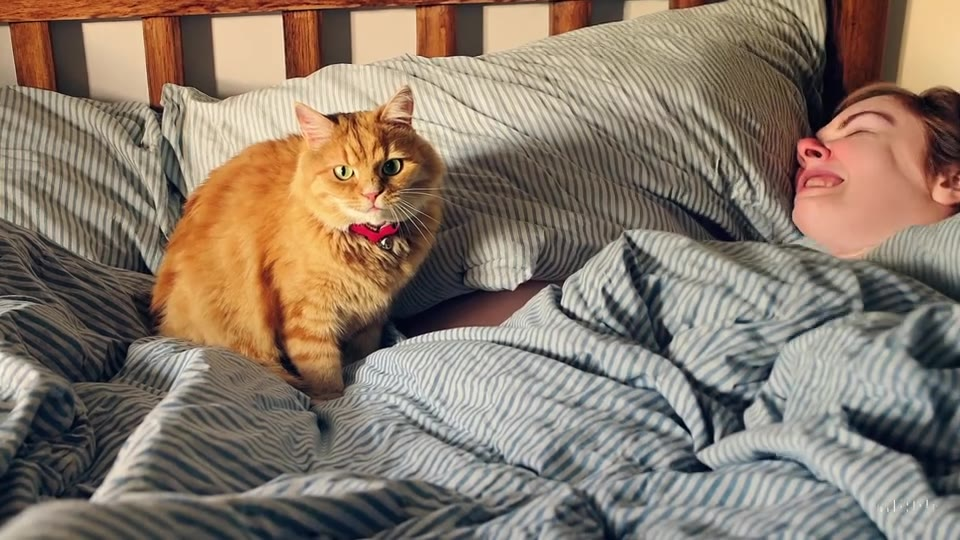
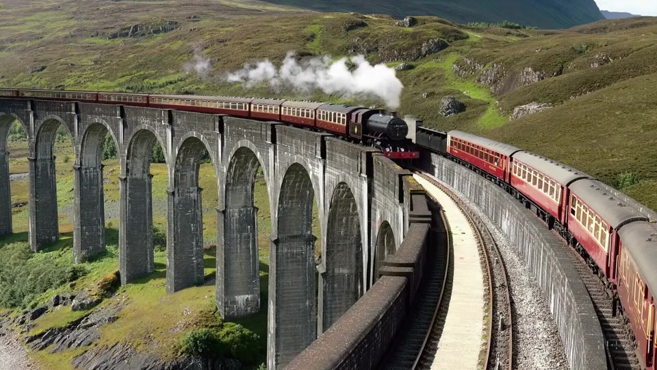
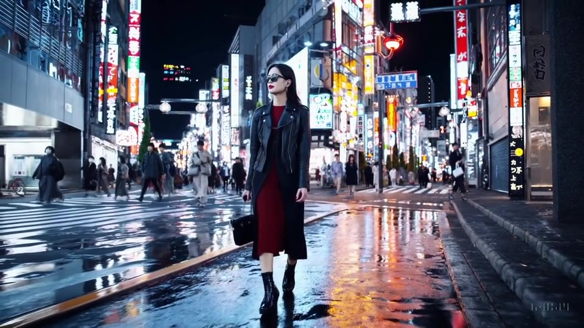
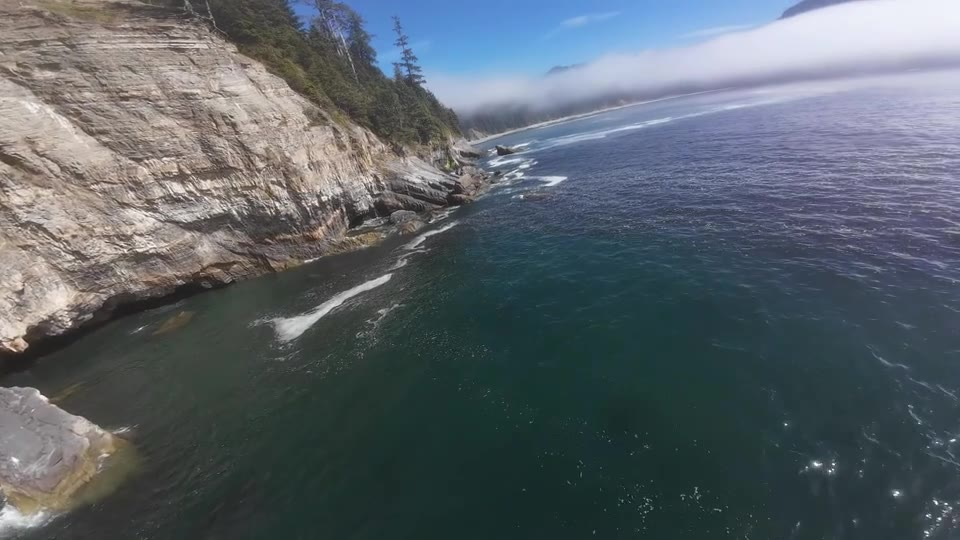
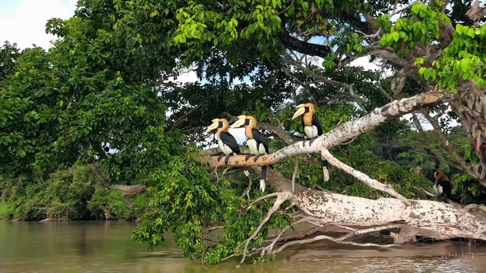
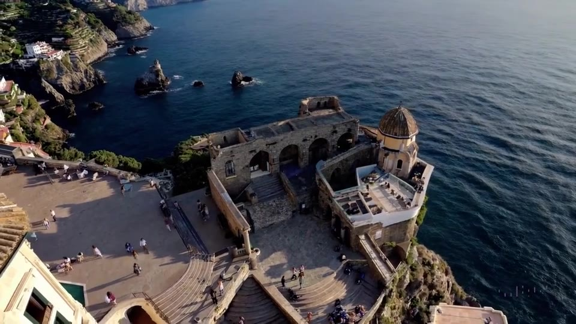

A imagem convence.
A origem confirma.
Cenas de cidade, animais e paisagens. Você consegue identificar qual vídeo foi criado por IA antes de conhecer a fonte?
Conhecer o métodoPreparando as imagens

que você vêéreal.Cenas de cidade, animais e paisagens. Você consegue identificar qual vídeo foi criado por IA antes de conhecer a fonte?
Conhecer o método
O que a fonte revela?Uma colagem de mundos possíveis. Observe o movimento antes de formar sua opinião.




Um foi filmado com câmera. O outro foi criado por IA. Assista às duas amostras e escolha a que você acredita ser artificial. Depois, descubra a origem.
As posições A e B mudam a cada nova participação.
Este é o vídeo do Grupo 3, mostrado uma única vez como exemplo. As seis rodadas do desafio usam outros vídeos, com cenas mais plausíveis e origens documentadas.
O exercício começa quando você deixa de perguntar apenas “parece verdadeiro?” e passa a perguntar “qual evidência sustenta isso?”.
A IA cria possibilidades.
A responsabilidade de validar continua humana.
Marque cada etapa que você realmente realizou. Este checklist organiza a investigação; ele não funciona como detector automático de IA.
Sua investigação ainda não começou.
Todos os vídeos têm fonte e crédito. Esta lista revela as respostas da dinâmica; consulte depois de participar.
Seis cenas criadas com Sora / OpenAI e seis filmagens publicadas por seus autores. Os vídeos foram recortados para 5 segundos, reenquadrados em 16:9, redimensionados para 960 × 540, convertidos para 30 fps e tiveram o áudio removido. O movimento original foi preservado. As respostas seguem a origem publicada.
Grupo 3 · Atividade 3
Workshop prático 1 — Vídeo gerado por IA
Uma experiência para alunos dos cursos regulares do SENAI “Gaspar Ricardo Júnior”: reconhecer sinais de geração ou manipulação em vídeos, desenvolver pensamento crítico e verificar contexto e fontes.
Ler orientações da atividadeLeandro Gaudio Rosa
Aprendizagem Industrial, Técnico e Superior
Site, vídeo fornecido, computador ou celular; projetor e som para apresentação coletiva.
27 e 30 de outubro de 2026
15 minutos por grupo
SENAI-SP. Inteligência com Consciência: o humano no centro da era digital. 2026, p. 3 e 6–7.